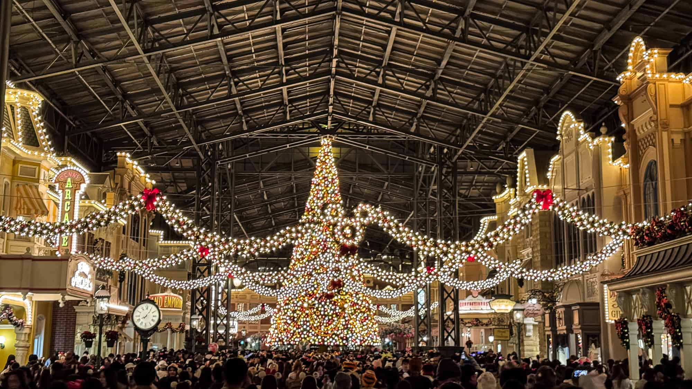
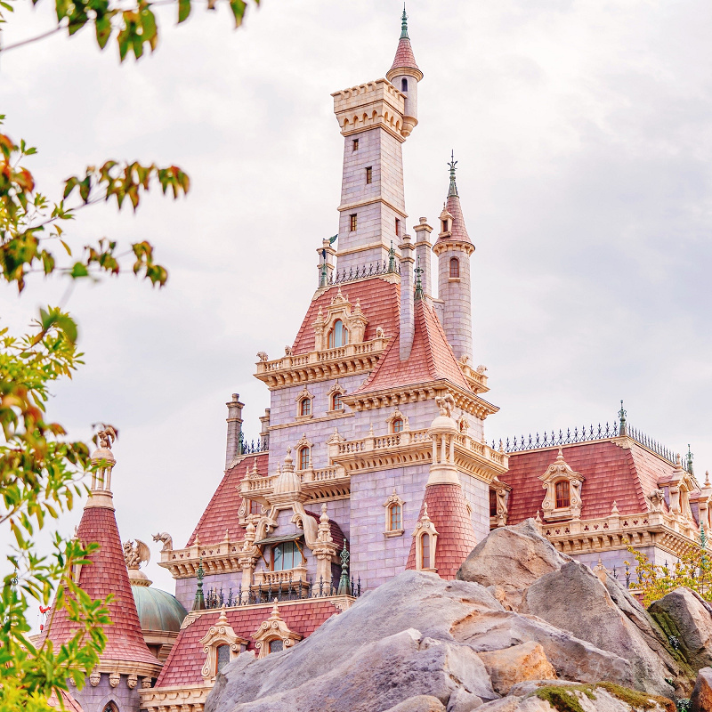

住吉を出発
京葉線で舞浜へ。カチューシャは現地で並ばずメルカリ調達済みのものを持参
東京ディズニーランド｜12月17日（木）9:00〜21:00｜チケット購入済み（大人2枚）
京葉線で舞浜へ。カチューシャは現地で並ばずメルカリ調達済みのものを持参
朝イチ入園のために早めに並ぶ
ショーのエントリー受付（マジカルミュージックワールド夕方回）／美女と野獣のDPA購入（夕方枠）／スタンバイパス確認

クリスマス限定版。いちばん並ぶので朝イチが正解
クリスマス版のショー。ウエスタンランドをのんびり散策

巨大クリスマスツリーとデコレーション。お土産は夜の混雑を避けてアプリ購入も手
シンデレラ城前に初登場のクリスマスフード集結エリア。ランチ本番は13:50のブルーバイユーなので軽めに

今年のクリスマスの主役。30分前から城前〜プラザで場所取り。有料DPA席もあり
PS確保済み（大人2名）。入口で予約名「クマノヤスユキ」で2名と伝える。支払いは現地で料理代のみ
通常パレードも公演あり。プーさんのハニーハント等に振ってもOK
エントリー当選想定。外れたらミッキーの家でミート・ミッキーへ

日が落ちたファンタジーランドがいちばんきれいな時間

クリスマス期間限定バージョン。音楽もコスチュームもクリスマス仕様

クリスマスソングにのせた約5分の花火
おつかれさま。帰りは京葉線で住吉へ